1. Introduction: Why do we need statistics
Lieven Clement
statOmics, Ghent University (https://statomics.github.io)


- We live in a big data era
- Data on location, clicks, e-commerce, social media …
- Life Sciences: measure expression of thousands of genes, proteins, … for each subject or even individual cells
- Data driven journalism
- …
Statistics is the science to learn from empirical data.
Statistical literacy is key to interpret results from scientific publications.
There are three types of lies: lies, damn lies and statistics
There are three types of lies: lies, damn lies and bad statistics
https://www.medrxiv.org/content/10.1101/2020.07.17.20155846v1


“The authors state: The negative ecological association between COVID-19 mortality and the consumption of cabbage and cucumber supports the a priori hypothesis previously reported. In this hypothesis, we proposed that vegetables such as Brassica - with an antioxidant activity reducing insulin resistance - may also be associated with low COVID-19 mortality in countries.”
" Though our results do not allow to infer causality, they do reinforce our a priory hypothesis that the ingestion of anti-oxidant foods acting on insulin intolerance may have reduced the severity of COVID-19. "


- Many hypotheses are assessed ?!
- Causality ?!
- Experimenteel design: Observational study
- Based on the data we cannot provide recommendations at the subject level

- Importance Data Exploration!
- Data does not exhibit the trend
- Data shows evidence for two clusters: above and below 200 deaths/million
- Model for cucumber does not model the data correctly: Overestimation of death rate for many countries e.g. Portugal, Hungary, …

Papers are merged, published, and 32 times cited
Bousquet et al. (2021). Cabbage and fermented vegetables: From death rate heterogeneity in countries to candidates for mitigation strategies of severe COVID-19. Allergy 76:735–750.
There main branches in statistics
- Statistical inference
- Is there an association between COVID-19 mortality and food consumption?
- Gevaar die we opmerkten in studie:
- data dredging, p-hacking, …: when you assess many hypotheses you will allways find strong patterns by random change \(\rightarrow\) correct for multiple testing!
- Assumptions of the models do not hold
- Confounding
Experimental design
Confounding: countries do not only differ in consumption of a vegetable but also in may other variables (demographical, COVID measures, healty care, …) that are associated with COVID mortality.
Difficulat to draw causal conclusions from observational studies.
In experimental studies: randomisation so that the groups only differ in the treatment.
Experimental studies are therefore the golden standard
Data exploration and visualisation
- Cruciaal om inzicht te verwerven in de data
- Model veronderstellingen nagaan!
1 Smelly armpit example
Smelly armpits are not caused by sweat itself. The smell is caused by specific micro-organisms belonging to the group of Corynebacterium spp. that metabolise sweat. Another group of abundant bacteria are the Staphylococcus spp., these bacteria do not metabolise sweat in smelly compounds.
The CMET-groep at Ghent University does research on transplanting the armpit microbiome to save people with smelly armpits.
Proposed Therapy:
- Remove armpit-microbiome with antibiotics
- Influence armpit microbiome with microbial transplant (https://youtu.be/9RIFyqLXdVw)
Experiment:
- 20 subjects with smelly armpits are attributed to one of two treatment groups
- placebo (only antibiotics)
- transplant (antibiotics followed by microbial transplant).
- The microbiome is sampled 6 weeks upon the treatment.
- The relative abundance of Staphylococcus spp. on Corynebacterium spp. + Staphylococcus spp. in the microbiome is measured via DGGE (Denaturing Gradient Gel Electrophoresis).
1.1 Import the data
[1] "trt,rel" "placebo,54.99207606973059"
[3] "placebo,31.84466019417476" "placebo,41.09947643979057"
[5] "placebo,59.52063914780293" "placebo,63.573407202216075"
[7] "placebo,41.48648648648649" "placebo,30.44041450777202"
[9] "placebo,42.95676429567643" "placebo,41.7391304347826"
[11] "placebo,33.896515311510036" "transplant,57.218124341412015"
[13] "transplant,72.50900360144058" "transplant,61.89258312020461"
[15] "transplant,56.690140845070424" "transplant,76"
[17] "transplant,71.7357910906298" "transplant,57.757296466973884"
[19] "transplant,65.1219512195122" "transplant,67.53424657534246"
[21] "transplant,77.55359394703657" The file is comma separated and in tidy format
1.2 Data Exploration and Descriptive Statistics
- Data exploration is extremely important to get insight in the data.
- It is often underrated and overlooked.
1.2.1 Descriptive statistics
We first summarize the data and calculate the mean, standard deviation, number of observations and standard error and store the result in an object apRelSum via ’apRelSum<-`
- We pipe the
apdataframe to the group_by function to group the data by treatment trtgroup_by(trt) - We pipe the result to the
summarize_atfunction to summarize the “rel” variable and calculate the mean, standard deviation and the number of observations - We pipe the result to the
mutatefunction to make a new variable in the data framesefor which we calculate the standard error
apRelSum<-ap%>%
group_by(trt)%>%
summarize_at("rel",
list(mean=~mean(.,na.rm=TRUE),
sd=~sd(.,na.rm=TRUE),
n=function(x) x%>%is.na%>%`!`%>%sum)) %>%
mutate(se=sd/sqrt(n))
apRelSum1.2.2 Plots
We will use ggplot2 to make our plots. With the ggplot2 library we can easily build plots by adding layers.
1.2.2.1 barplot
We pipe our summarized data to the
ggplotfunction and we select the treatment variable trt and the variable mean for plottingaes(x=trt,y=mean)We make a barplot based on this data using the
geom_barfunction. The statistic isstat="identity"because the bar height should be equal the value for the mean of the relative abundance.
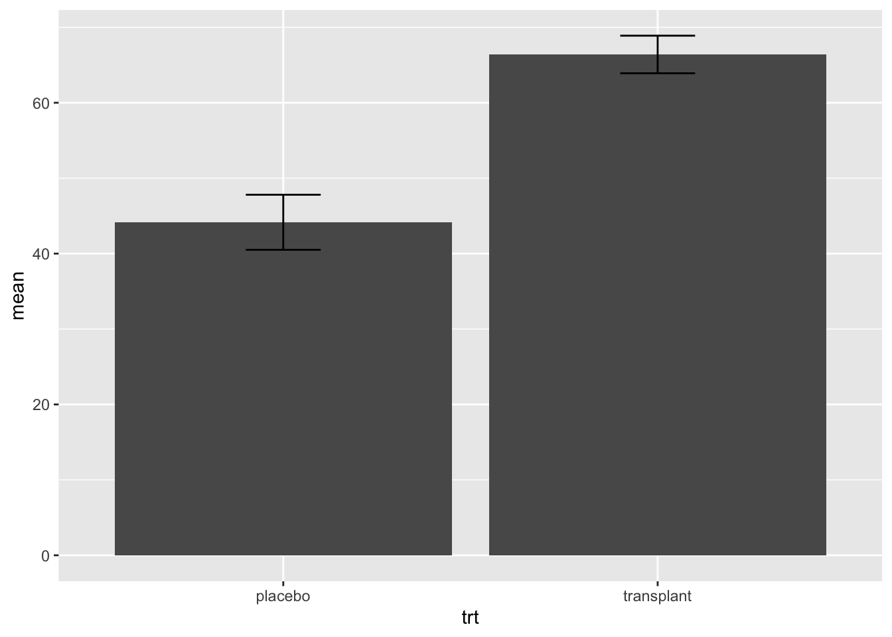
- Is this plot informative??
We will now add standard errors to the plot using geom_errorbar function and specify the minimum and maximum value for of the error bar, the width command is used to set the width of the error bar smaller than the width of the bar.
apRelSum%>%
ggplot(aes(x=trt,y=mean)) +
geom_bar(stat="identity") +
geom_errorbar(aes(ymin=mean-se,ymax=mean+se),width=.2)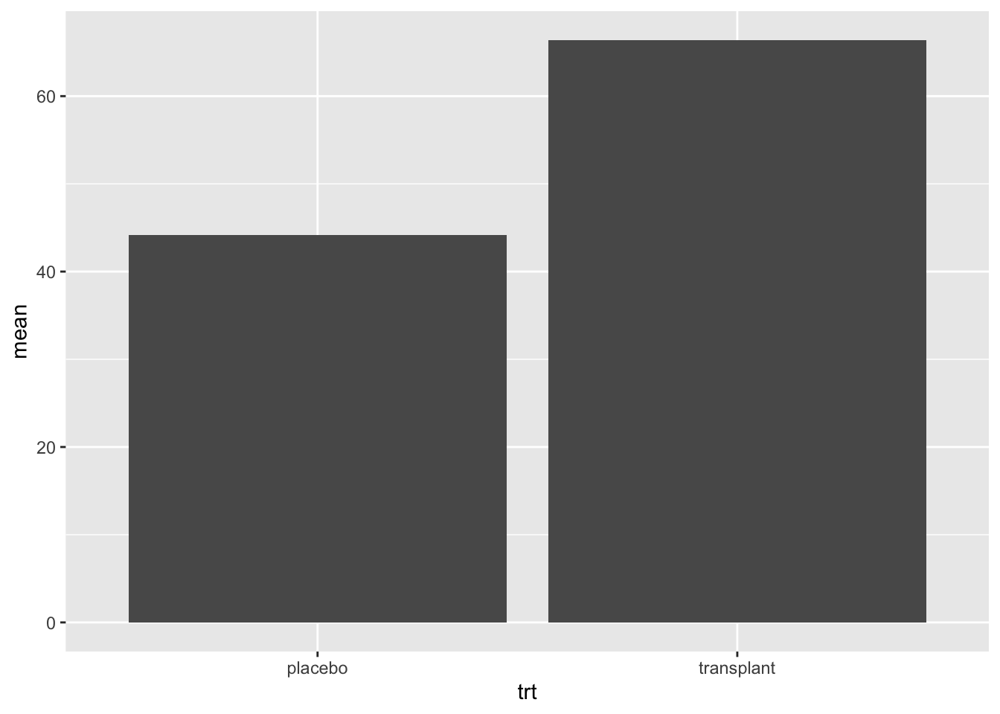
- Is this plot informative??
1.2.2.2 boxplots
I consider barplots to be bad plots
- They are not informative
- They just visualize a two point summary of the data. It is better to do this in a table
- They use a lot of space (e.g. from zero up to the minimum relative abundance) where no data are present.
It is better to get a view on the distribution of the data. We can use a boxplot for this purpose. We first explain what a boxplot.

We will now make a boxplot for the ap data
- We pipe the
apdataframe to the ggplot command - We select the data with the command
ggplot(aes(x=trt,y=rel)) - We add a boxplot with the command
geom_boxplot()
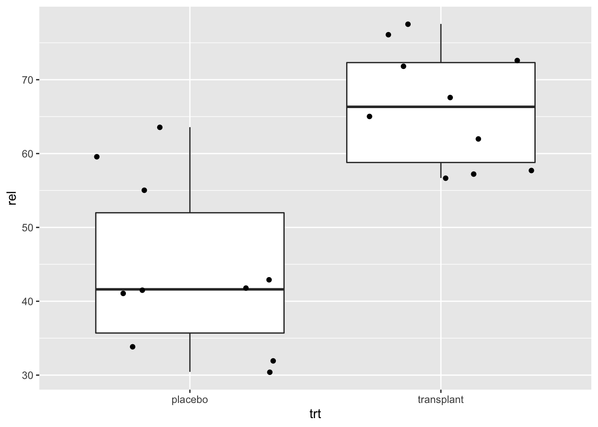
Note, that we do not have so many observations.
It is always better to show the data as raw as possible!
We will now add the raw data to the plot.
- Note that we set the outlier.shape=NA in the geom_boxplot function because because we will add all raw data anyway.
- We add the raw data using
geom_point(position="jitter"), with the argument position=‘jitter’ we will add some random noise to the x coordinate so that we can see all data.
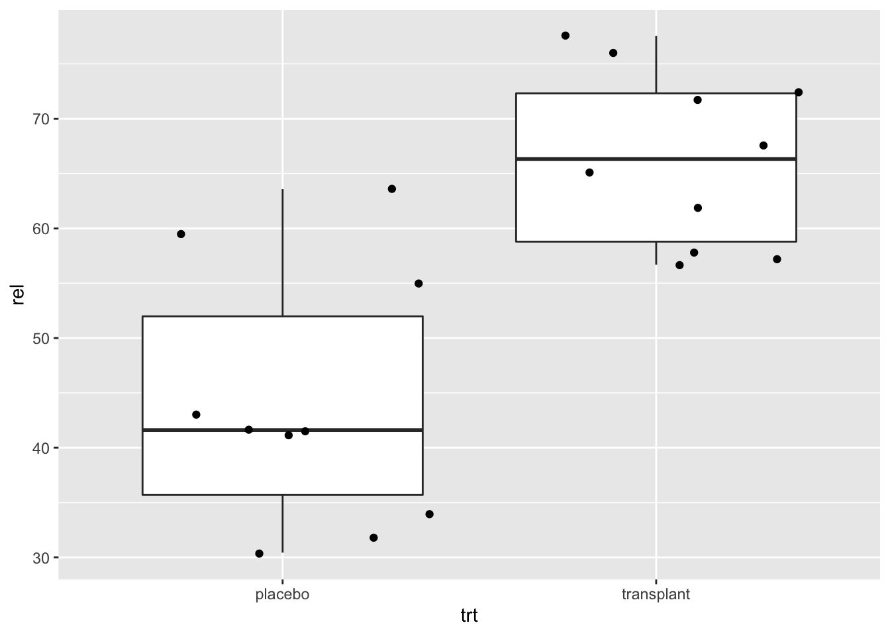
This is an informative plot!
1.3 Some concepts
Why do we need more than one student per group?
What are the meaning and the consequences of the term “randomly”?
Consider two designs:
A research assistant selects 20 male students with smelly armpits from his faculty.
A research assistant selects 20 random people with smelly armpits from the Belgian population.
ap %>%
ggplot(aes(x=trt,y=rel)) +
geom_boxplot(outlier.shape=NA) +
geom_point(position="jitter") +
ylim(0,100)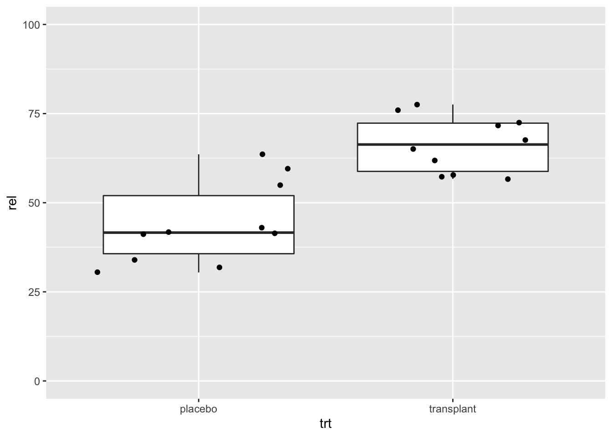
ap2 %>%
ggplot(aes(x=trt,y=rel)) +
geom_boxplot(outlier.shape=NA) +
geom_point(position="jitter") +
ylim(0,100)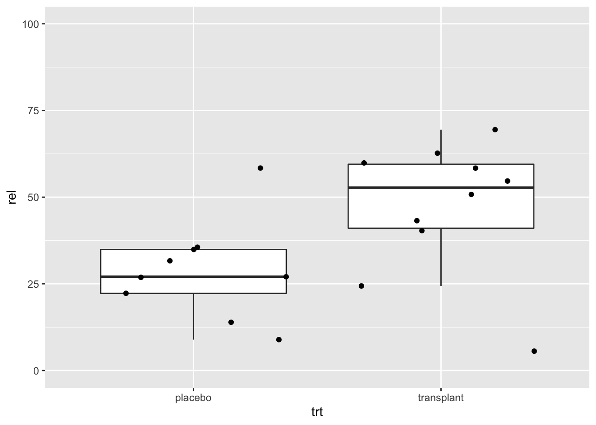
Design 1: smaller variability
Design 2: larger variability and lower relative abundance of Staphylococcus
What is the best design?
Random sampling is closely related to the concept of the population or the scope of the study.
Based on a sample of subjects, the researchers want to come to conclusions that hold for
- all kinds of people
- only male students
Scope of the study should be well specified before the start of the study.
For the statistical analysis to be valid, it is required that the subjects are selected completely at random from the population to which we want to generalize our conclusions.
Selecting completely at random from a population implies:
- all subjects in the population should have the same probability of being selected in the sample,
- the selection of a subject in the sample should be independent from the selection of the other subjects in the sample.
The sample is thus supposed to be representative for the population, but still it is random.
What does this imply?
2 Sample to sample variability
National Health NHanes study
- Since 1960 individuals of all ages are interviewed in their homes every year
- The health examination component of the survey is conducted in a mobile examination centre (MEC).
- We will use this large study to select random subjects from the American population.
- This will help us to understand how the results of an analysis and the conclusions vary from sample to sample.
Rows: 10,000
Columns: 76
$ ID <int> 51624, 51624, 51624, 51625, 51630, 51638, 51646, 5164…
$ SurveyYr <fct> 2009_10, 2009_10, 2009_10, 2009_10, 2009_10, 2009_10,…
$ Gender <fct> male, male, male, male, female, male, male, female, f…
$ Age <int> 34, 34, 34, 4, 49, 9, 8, 45, 45, 45, 66, 58, 54, 10, …
$ AgeDecade <fct> 30-39, 30-39, 30-39, 0-9, 40-49, 0-9, 0-9, 40…
$ AgeMonths <int> 409, 409, 409, 49, 596, 115, 101, 541, 541, 541, 795,…
$ Race1 <fct> White, White, White, Other, White, White, White, Whit…
$ Race3 <fct> NA, NA, NA, NA, NA, NA, NA, NA, NA, NA, NA, NA, NA, N…
$ Education <fct> High School, High School, High School, NA, Some Colle…
$ MaritalStatus <fct> Married, Married, Married, NA, LivePartner, NA, NA, M…
$ HHIncome <fct> 25000-34999, 25000-34999, 25000-34999, 20000-24999, 3…
$ HHIncomeMid <int> 30000, 30000, 30000, 22500, 40000, 87500, 60000, 8750…
$ Poverty <dbl> 1.36, 1.36, 1.36, 1.07, 1.91, 1.84, 2.33, 5.00, 5.00,…
$ HomeRooms <int> 6, 6, 6, 9, 5, 6, 7, 6, 6, 6, 5, 10, 6, 10, 10, 4, 3,…
$ HomeOwn <fct> Own, Own, Own, Own, Rent, Rent, Own, Own, Own, Own, O…
$ Work <fct> NotWorking, NotWorking, NotWorking, NA, NotWorking, N…
$ Weight <dbl> 87.4, 87.4, 87.4, 17.0, 86.7, 29.8, 35.2, 75.7, 75.7,…
$ Length <dbl> NA, NA, NA, NA, NA, NA, NA, NA, NA, NA, NA, NA, NA, N…
$ HeadCirc <dbl> NA, NA, NA, NA, NA, NA, NA, NA, NA, NA, NA, NA, NA, N…
$ Height <dbl> 164.7, 164.7, 164.7, 105.4, 168.4, 133.1, 130.6, 166.…
$ BMI <dbl> 32.22, 32.22, 32.22, 15.30, 30.57, 16.82, 20.64, 27.2…
$ BMICatUnder20yrs <fct> NA, NA, NA, NA, NA, NA, NA, NA, NA, NA, NA, NA, NA, N…
$ BMI_WHO <fct> 30.0_plus, 30.0_plus, 30.0_plus, 12.0_18.5, 30.0_plus…
$ Pulse <int> 70, 70, 70, NA, 86, 82, 72, 62, 62, 62, 60, 62, 76, 8…
$ BPSysAve <int> 113, 113, 113, NA, 112, 86, 107, 118, 118, 118, 111, …
$ BPDiaAve <int> 85, 85, 85, NA, 75, 47, 37, 64, 64, 64, 63, 74, 85, 6…
$ BPSys1 <int> 114, 114, 114, NA, 118, 84, 114, 106, 106, 106, 124, …
$ BPDia1 <int> 88, 88, 88, NA, 82, 50, 46, 62, 62, 62, 64, 76, 86, 6…
$ BPSys2 <int> 114, 114, 114, NA, 108, 84, 108, 118, 118, 118, 108, …
$ BPDia2 <int> 88, 88, 88, NA, 74, 50, 36, 68, 68, 68, 62, 72, 88, 6…
$ BPSys3 <int> 112, 112, 112, NA, 116, 88, 106, 118, 118, 118, 114, …
$ BPDia3 <int> 82, 82, 82, NA, 76, 44, 38, 60, 60, 60, 64, 76, 82, 7…
$ Testosterone <dbl> NA, NA, NA, NA, NA, NA, NA, NA, NA, NA, NA, NA, NA, N…
$ DirectChol <dbl> 1.29, 1.29, 1.29, NA, 1.16, 1.34, 1.55, 2.12, 2.12, 2…
$ TotChol <dbl> 3.49, 3.49, 3.49, NA, 6.70, 4.86, 4.09, 5.82, 5.82, 5…
$ UrineVol1 <int> 352, 352, 352, NA, 77, 123, 238, 106, 106, 106, 113, …
$ UrineFlow1 <dbl> NA, NA, NA, NA, 0.094, 1.538, 1.322, 1.116, 1.116, 1.…
$ UrineVol2 <int> NA, NA, NA, NA, NA, NA, NA, NA, NA, NA, NA, NA, NA, N…
$ UrineFlow2 <dbl> NA, NA, NA, NA, NA, NA, NA, NA, NA, NA, NA, NA, NA, N…
$ Diabetes <fct> No, No, No, No, No, No, No, No, No, No, No, No, No, N…
$ DiabetesAge <int> NA, NA, NA, NA, NA, NA, NA, NA, NA, NA, NA, NA, NA, N…
$ HealthGen <fct> Good, Good, Good, NA, Good, NA, NA, Vgood, Vgood, Vgo…
$ DaysPhysHlthBad <int> 0, 0, 0, NA, 0, NA, NA, 0, 0, 0, 10, 0, 4, NA, NA, 0,…
$ DaysMentHlthBad <int> 15, 15, 15, NA, 10, NA, NA, 3, 3, 3, 0, 0, 0, NA, NA,…
$ LittleInterest <fct> Most, Most, Most, NA, Several, NA, NA, None, None, No…
$ Depressed <fct> Several, Several, Several, NA, Several, NA, NA, None,…
$ nPregnancies <int> NA, NA, NA, NA, 2, NA, NA, 1, 1, 1, NA, NA, NA, NA, N…
$ nBabies <int> NA, NA, NA, NA, 2, NA, NA, NA, NA, NA, NA, NA, NA, NA…
$ Age1stBaby <int> NA, NA, NA, NA, 27, NA, NA, NA, NA, NA, NA, NA, NA, N…
$ SleepHrsNight <int> 4, 4, 4, NA, 8, NA, NA, 8, 8, 8, 7, 5, 4, NA, 5, 7, N…
$ SleepTrouble <fct> Yes, Yes, Yes, NA, Yes, NA, NA, No, No, No, No, No, Y…
$ PhysActive <fct> No, No, No, NA, No, NA, NA, Yes, Yes, Yes, Yes, Yes, …
$ PhysActiveDays <int> NA, NA, NA, NA, NA, NA, NA, 5, 5, 5, 7, 5, 1, NA, 2, …
$ TVHrsDay <fct> NA, NA, NA, NA, NA, NA, NA, NA, NA, NA, NA, NA, NA, N…
$ CompHrsDay <fct> NA, NA, NA, NA, NA, NA, NA, NA, NA, NA, NA, NA, NA, N…
$ TVHrsDayChild <int> NA, NA, NA, 4, NA, 5, 1, NA, NA, NA, NA, NA, NA, 4, N…
$ CompHrsDayChild <int> NA, NA, NA, 1, NA, 0, 6, NA, NA, NA, NA, NA, NA, 3, N…
$ Alcohol12PlusYr <fct> Yes, Yes, Yes, NA, Yes, NA, NA, Yes, Yes, Yes, Yes, Y…
$ AlcoholDay <int> NA, NA, NA, NA, 2, NA, NA, 3, 3, 3, 1, 2, 6, NA, NA, …
$ AlcoholYear <int> 0, 0, 0, NA, 20, NA, NA, 52, 52, 52, 100, 104, 364, N…
$ SmokeNow <fct> No, No, No, NA, Yes, NA, NA, NA, NA, NA, No, NA, NA, …
$ Smoke100 <fct> Yes, Yes, Yes, NA, Yes, NA, NA, No, No, No, Yes, No, …
$ Smoke100n <fct> Smoker, Smoker, Smoker, NA, Smoker, NA, NA, Non-Smoke…
$ SmokeAge <int> 18, 18, 18, NA, 38, NA, NA, NA, NA, NA, 13, NA, NA, N…
$ Marijuana <fct> Yes, Yes, Yes, NA, Yes, NA, NA, Yes, Yes, Yes, NA, Ye…
$ AgeFirstMarij <int> 17, 17, 17, NA, 18, NA, NA, 13, 13, 13, NA, 19, 15, N…
$ RegularMarij <fct> No, No, No, NA, No, NA, NA, No, No, No, NA, Yes, Yes,…
$ AgeRegMarij <int> NA, NA, NA, NA, NA, NA, NA, NA, NA, NA, NA, 20, 15, N…
$ HardDrugs <fct> Yes, Yes, Yes, NA, Yes, NA, NA, No, No, No, No, Yes, …
$ SexEver <fct> Yes, Yes, Yes, NA, Yes, NA, NA, Yes, Yes, Yes, Yes, Y…
$ SexAge <int> 16, 16, 16, NA, 12, NA, NA, 13, 13, 13, 17, 22, 12, N…
$ SexNumPartnLife <int> 8, 8, 8, NA, 10, NA, NA, 20, 20, 20, 15, 7, 100, NA, …
$ SexNumPartYear <int> 1, 1, 1, NA, 1, NA, NA, 0, 0, 0, NA, 1, 1, NA, NA, 1,…
$ SameSex <fct> No, No, No, NA, Yes, NA, NA, Yes, Yes, Yes, No, No, N…
$ SexOrientation <fct> Heterosexual, Heterosexual, Heterosexual, NA, Heteros…
$ PregnantNow <fct> NA, NA, NA, NA, NA, NA, NA, NA, NA, NA, NA, NA, NA, N…2.1 Data exploration
Suppose that we are interested in assessing the difference in direct cholesterol levels between males and females older than 25 years.
- We pipe the dataset to the function
filterto filter the data according to age. - We plot the direct cholesterol levels.
- We select the data with the command
ggplot(aes(x=DirectChol)) - We add a histogram with the command
geom_histogram() - We make to vertical panels using the command
facet_grid(Gender~.) - We customize the label of the x-axis with the
xlabcommand.
- We select the data with the command
NHANES%>%filter(Age>25)%>%
ggplot(aes(x=DirectChol))+
geom_histogram() +
facet_grid(Gender~.) +
xlab("Direct cholesterol (mg/dl)")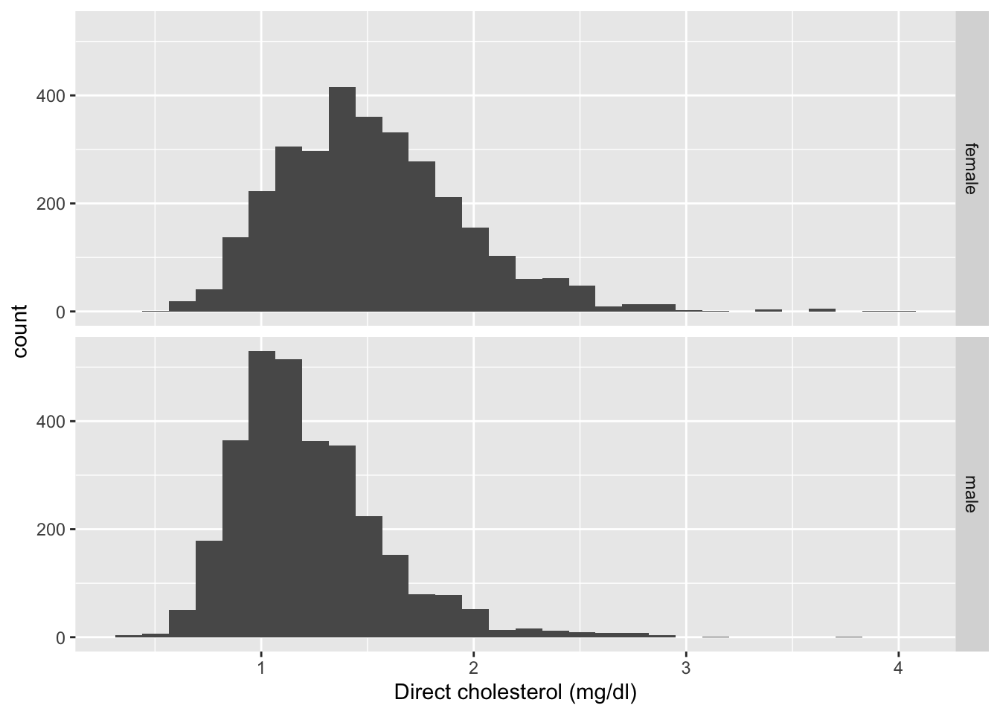
- Cholesterol levels and concentration measurements are often skewed.
- Concentrations cannot be lower than 0.
- They are often log transformed.
NHANES%>%
filter(Age>25)%>%
ggplot(aes(x=DirectChol%>%log2))+
geom_histogram() +
facet_grid(Gender~.) +
xlab("Direct cholesterol (log2)")
We see that the data are more or less bell shaped upon log transformation.
We will now create a subset of the data that we will use to sample from in the next sections.
- We filter on age and remove subjects with missing values (NA).
- We only select the variables Gender and DirectChol from the dataset to avoid unnecessary variables.
- With the mutate function we can add a new variable logChol with log transformed direct cholesterol levels.
nhanesSub<- NHANES%>%
filter(Age>25&!is.na(DirectChol)) %>%
select(c("Gender","DirectChol")) %>%
mutate(cholLog=log2(DirectChol))We will calculate the summary statistics for the cholLog variable for males and females in the large dataset. So we group by Gender
cholLogSum<- nhanesSub %>%
group_by(Gender) %>%
summarize_at("cholLog",
list(mean=~mean(.,na.rm=TRUE),
sd=~sd(.,na.rm=TRUE),
n=function(x) x%>%is.na%>%`!`%>%sum)) %>%
mutate(se=sd/sqrt(n))
cholLogSum2.2 Experiment
- Suppose that we have no access to cholesterol levels of the American population,
- we will have to setup an experiment.
- Suppose we have a budget for assessing 10 females and 10 males,
- we will subset 10 females and 10 males at random from the American population and measure their direct cholesterol levels.
fem<-nhanesSub%>%filter(Gender=="female")%>%sample_n(size=10)
mal<-nhanesSub%>%filter(Gender=="male")%>%sample_n(size=10)
samp<-rbind(fem,mal)
sampWe will now plot the data with a histogram and boxplots
samp %>%
ggplot(aes(x=cholLog))+
geom_histogram(binwidth = .1) +
facet_grid(Gender~.) +
xlab("Direct cholesterol (log2)")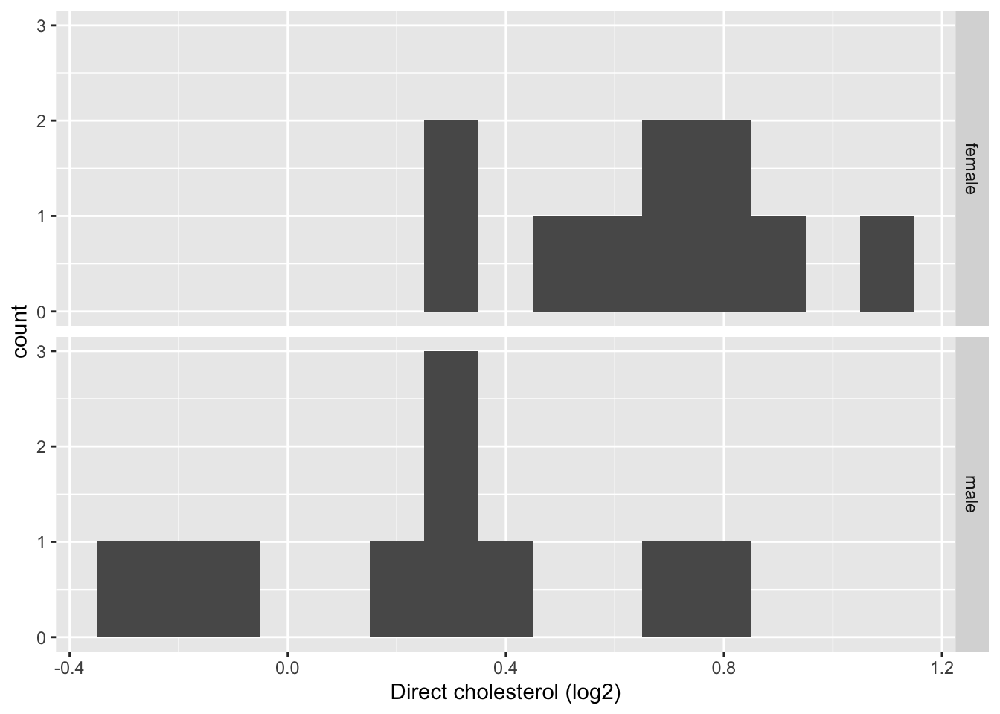
samp%>%
ggplot(aes(x=Gender,y=cholLog)) +
geom_boxplot(outlier.shape=NA) +
geom_point(position="jitter")
We summarize the data
samp %>%
group_by(Gender) %>%
summarize_at("cholLog",
list(mean=~mean(.,na.rm=TRUE),
sd=~sd(.,na.rm=TRUE),
n=function(x) x%>%is.na%>%`!`%>%sum)) %>%
mutate(se=sd/sqrt(n))Note that the sample mean is different from that of the large experiment (“population”) we sampled from.
We test for the difference between Males and females
Two Sample t-test
data: cholLog by Gender
t = 1.8595, df = 18, p-value = 0.07938
alternative hypothesis: true difference in means between group female and group male is not equal to 0
95 percent confidence interval:
-0.03687782 0.60504909
sample estimates:
mean in group female mean in group male
0.7502006 0.4661150 2.3 Repeat the experiment
If we do the experiment again we select other people and we obtain different results.
fem<-nhanesSub%>%filter(Gender=="female")%>%sample_n(size=10)
mal<-nhanesSub%>%filter(Gender=="male")%>%sample_n(size=10)
samp2<-rbind(fem,mal)
samp2%>%
ggplot(aes(x=DirectChol%>%log))+
geom_histogram(binwidth = .1) +
facet_grid(Gender~.) +
xlab("Direct cholesterol (log)")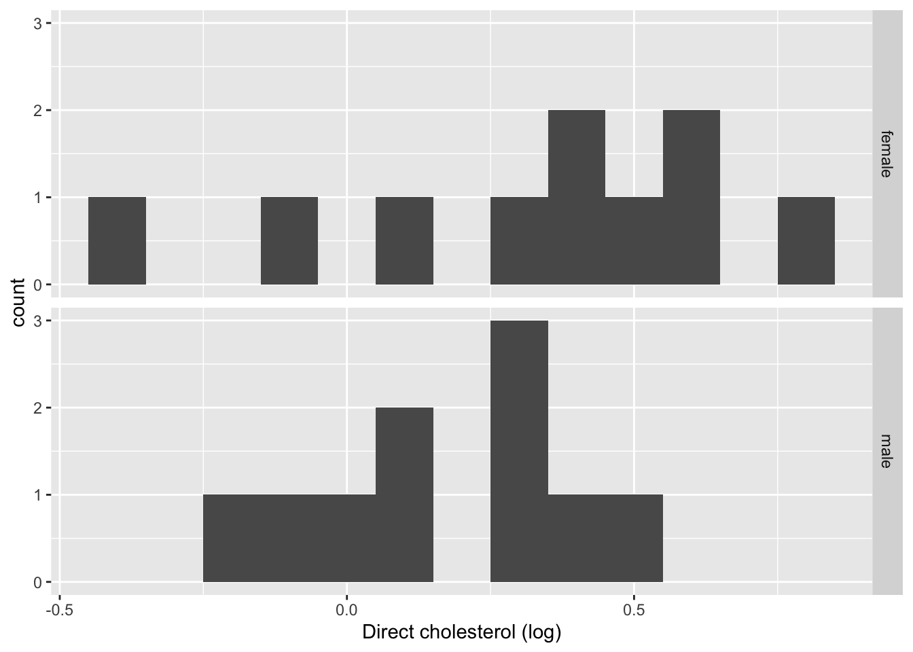
samp2%>%
ggplot(aes(x=Gender,y=cholLog)) +
geom_boxplot(outlier.shape=NA) +
geom_point(position="jitter")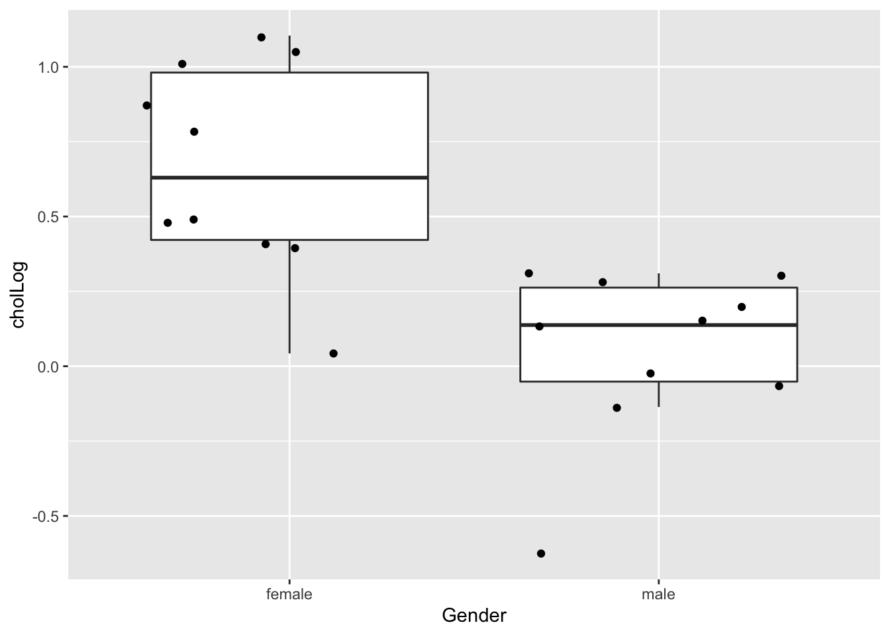
samp2 %>%
group_by(Gender) %>%
summarize_at("cholLog",
list(mean=~mean(.,na.rm=TRUE),
sd=~sd(.,na.rm=TRUE),
n=function(x) x%>%is.na%>%`!`%>%sum)) %>%
mutate(se=sd/sqrt(n))
Two Sample t-test
data: cholLog by Gender
t = 2.2809, df = 18, p-value = 0.03495
alternative hypothesis: true difference in means between group female and group male is not equal to 0
95 percent confidence interval:
0.03089392 0.75201701
sample estimates:
mean in group female mean in group male
0.44694737 0.05549191 2.4 And again
set.seed(12857)
fem<-nhanesSub%>%filter(Gender=="female")%>%sample_n(size=10)
mal<-nhanesSub%>%filter(Gender=="male")%>%sample_n(size=10)
samp3<-rbind(fem,mal)
samp3%>%
ggplot(aes(x=DirectChol%>%log))+
geom_histogram(binwidth = .1) +
facet_grid(Gender~.) +
xlab("Direct cholesterol (log)")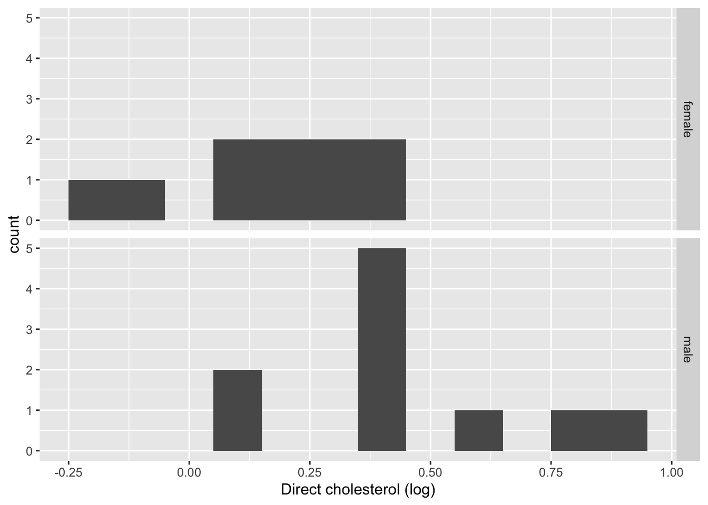
samp3%>%
ggplot(aes(x=Gender,y=cholLog)) +
geom_boxplot(outlier.shape=NA) +
geom_point(position="jitter")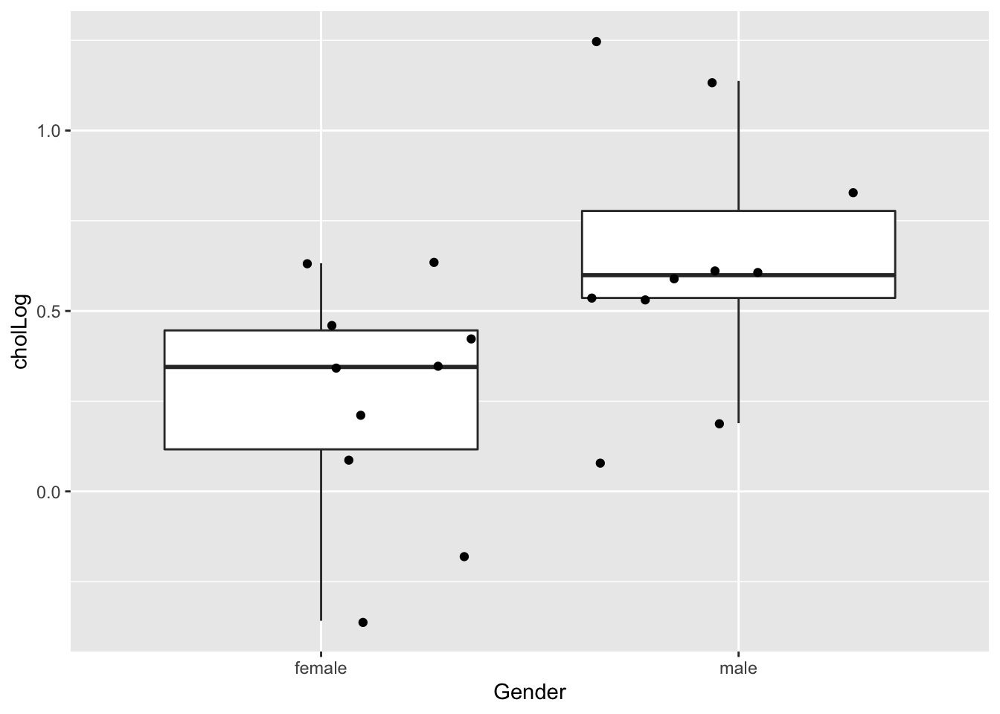
samp3 %>%
group_by(Gender) %>%
summarize_at("cholLog",
list(mean=~mean(.,na.rm=TRUE),
sd=~sd(.,na.rm=TRUE),
n=function(x) x%>%is.na%>%`!`%>%sum)) %>%
mutate(se=sd/sqrt(n))
Two Sample t-test
data: cholLog by Gender
t = -2.4449, df = 18, p-value = 0.02501
alternative hypothesis: true difference in means between group female and group male is not equal to 0
95 percent confidence interval:
-0.7049891 -0.0533427
sample estimates:
mean in group female mean in group male
0.2585913 0.6377572 2.5 Summary
Because we sampled other subjects in each sample, we obtain different cholesterol levels.
However, not only the cholesterol levels differ from sample to sample but also the summary statistics: means, standard deviations and standard errors.
Note, that in the last sample the log cholesterol levels are on average lower for females than for males; based on this sample we even would wrongly conclude that the cholesterol levels for females are on average larger than those of males.
This implies that our conclusions are also subjected to uncertainty and might change from sample to sample.
Samples as the one where the effect swaps and is statistically significant, however, are very rare.
This is illustrated with the code below, where we will draw 20000 repeated samples with sample size 10 for females and males from the NHanes study.
nsim<-20000
nSamp<-10
res<-matrix(0,nrow=nsim,ncol=2)
fem<-nhanesSub%>%filter(Gender=="female")
mal<-nhanesSub%>%filter(Gender=="male")
for (i in 1:nsim)
{
femSamp<-sample(fem$cholLog,nSamp)
malSamp<-sample(mal$cholLog,nSamp)
meanFem<-mean(femSamp)
meanMal<-mean(malSamp)
delta<-meanFem-meanMal
sdFem<-sd(femSamp)
sdMal<-sd(malSamp)
seFem<-sdFem/sqrt(nSamp)
seFem<-sdFem/sqrt(nSamp)
sdPool<-sqrt((sdFem^2*(nSamp-1) + sdMal^2*(nSamp-1))/(2*nSamp-2))
tvalue<-(delta)/(sdPool*sqrt(1/nSamp+1/nSamp))
pvalue<-pt(abs(tvalue),lower.tail = FALSE,df=2*nSamp-2)*2
res[i,]<-c(delta,pvalue)
}
sum(res[,2]<0.05&res[,1]>0)[1] 7785[1] 12212[1] 3res<-res %>% as.data.frame
names(res) <- c("delta","pvalue")
res %>%
ggplot(aes(x=delta,y=-log10(pvalue),color=pvalue<0.05)) +
geom_point() +
xlab("Average cholesterol difference") +
ylab("- log10(pvalue)") +
scale_color_manual(values=c("black","red"))
res %>%
ggplot(aes(y=delta)) +
geom_boxplot() +
geom_point(aes(x=0,y=c(mean(fem$cholLog)-mean(mal$cholLog)),color="pop. diff")) +
xlab("")
Only in 3 out of 20000 samples we conclude that the mean cholesterol level of males is significantly lower than for females. For the remaining samples the cholesterol levels for males were on average significantly lower than for females (7785 samples) or the average difference in cholesterol levels were not statistically significant (12212 samples). The latter is because the power is rather low to detect the difference with 10 samples in each group.
2.6 Assignment
- Copy the code chunk with the simulation study
- Add it here below
- Modify the sample size to 50.
- What do you observe?
3 Salk Study
- In 1916, the US experienced the first large epidemic of polio.
- John Salk developed a vaccine with promising results in the lab in the early fifties.
- In 1954, the National Foundation for Infantile Paralysis (NFIP) has setup a large study to assess the effectiveness of the Salk vaccine.
- Suppose that the NFIP would have vaccinated a large number of children in 1954 and would have observed that the polio incidence in 1954 was lower than in 1953. Could they have concluded that the vaccine was effective?
3.1 NFIP Study
3.1.1 Design
- Large simultaneous study with cases, vaccinated children, and controls, non-vaccinated children.
- All schools in districts with high polio incidence
- Cases: children with consent for vaccination from second grade of primary school.
- Controls: children from first and third grade.
3.1.2 Data
nfip<-data.frame(group=c("cases","control","noConcent"),grade=c("g2","g1g3","g2"),vaccin=c("yes","no","no"),total=c(221998,725173,123605),polio=c(54,391,56))
nfip$noPolio<-nfip$total-nfip$polio
knitr::kable(nfip)| group | grade | vaccin | total | polio | noPolio |
|---|---|---|---|---|---|
| cases | g2 | yes | 221998 | 54 | 221944 |
| control | g1g3 | no | 725173 | 391 | 724782 |
| noConcent | g2 | no | 123605 | 56 | 123549 |
Compare polio incidence?
What can we conclude?
3.2 Confounding

We observe a lower polio (P) incidence for children for who no consent was given than for the children in the control group.
Consent for vaccination (V) was associated with the socio-economic status (S).
Children of lower socio-economic status were more resistant to the disease.
The groups of cases and controls are not comparable:
- difference in age,
- difference in socio-economic status and
- difference in susceptible for disease.
3.3 Salk Study
3.3.1 Design
A new study was conducted: Randomized double blind study
- Children are assigned at random to the control or case treatment arm after consent was given by the parents.
- Control: vaccination with placebo
- Treatment: vaccination with vaccine
- double blinding:
- parents did not know if their child was vaccinated or received the placebo
- care-giver/researchers did not know if the child was vaccinated or received placebo
3.3.2 Data
salk<-data.frame(group=c("cases","control","noConcent"),treatment=c("vaccine","placebo","none"),total=c(200745,
201229, 338778),polio=c(57,142,157))
salk$noPolio<-salk$total-salk$polio
salk$incidencePM<-round(salk$polio/salk$total*1e6,0)
knitr::kable(salk)| group | treatment | total | polio | noPolio | incidencePM |
|---|---|---|---|---|---|
| cases | vaccine | 200745 | 57 | 200688 | 284 |
| control | placebo | 201229 | 142 | 201087 | 706 |
| noConcent | none | 338778 | 157 | 338621 | 463 |
We observe a much larger effect now that the cases and the controls are comparable, incidence of 284 and 706 per million, respectively.
The polio incidence for children with no consent remains similar, and 463 per million in the NFIP and Salk study, respectively.
4 Scientific Method
- Empirical data is key in the life sciences.
- Research is largely driven by data.
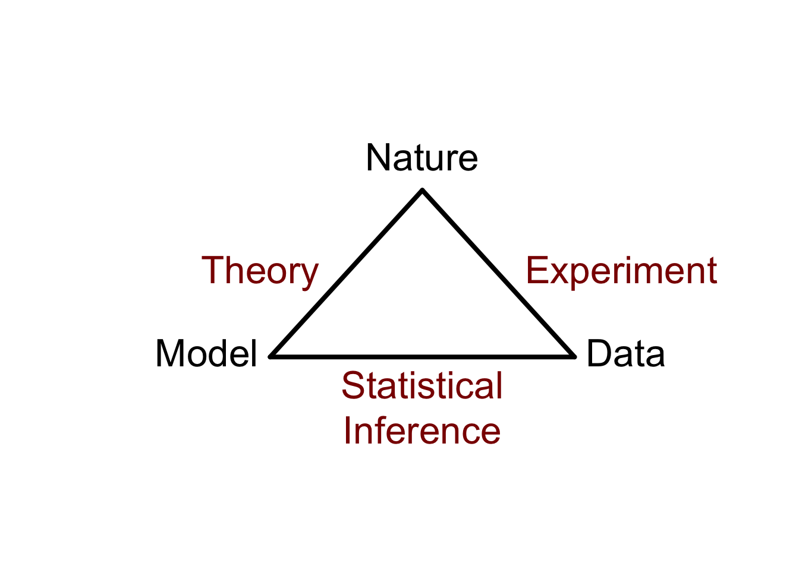
Nature: biological process which we study
Deduction: deduce logical consequences of the theory/hypothesis that can be experimentally validated.
Experiment: collect data on the process. The data are a manifestation of the real process. The experiment has to be representative and reproducible and should challenge the theory. Experimental Design!
Statistical inference: Bridge to confront the model/hypothesis to the data \(\rightarrow\) Cornerstone of the scientific method.
Falsification principle: Data cannot be used to prove a model/hypothesis, only to reject it.
Data-exploration and analysis is typically used to refine the theory and to generate new hypotheses.
5 Role of Statistics in the Life Sciences
- We have seen that
- it is important to carefully specify the scope of the study before the experiment,
- the sample size matters,
- we should be aware of confounding, and
- a proper control is required.
\(\rightarrow\) Good experimental design is crucial!
We also observed that there is variability in the population and because we can only sample a small part of the population our results and conclusions are subjected to uncertainty.
Statistics is the science on
- collecting (experimental design),
- exploring (data exploration) and
- learning from data and to generalize what we observe in the sample towards the population while quantifying, controlling and reporting variability and uncertainty (statistical modelling and statistical inference).
Therefore, statistics plays an important role in almost all sciences (e.g. column “points of significance” in Nature Methods. http://blogs.nature.com/methagora/2013/08/giving_statistics_the_attention_it_deserves.html)
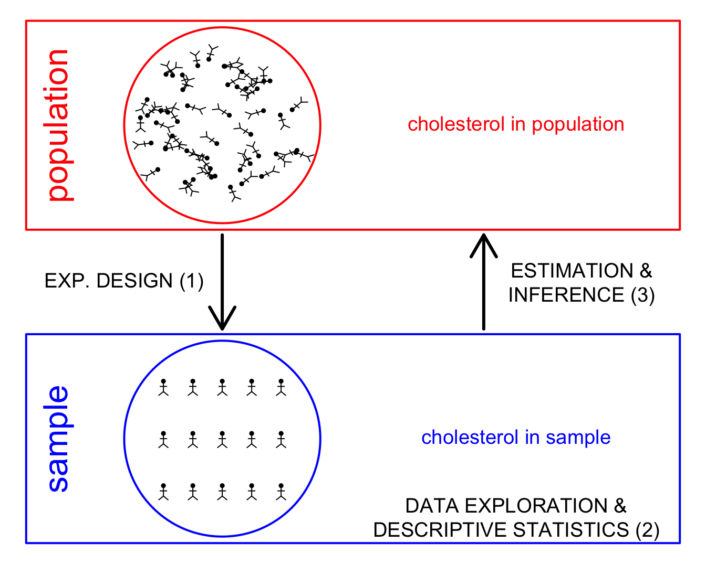